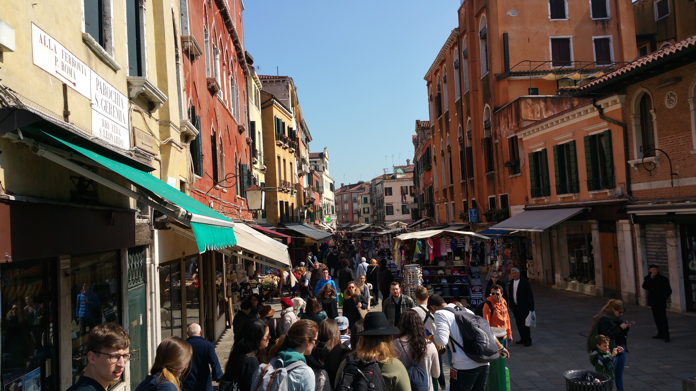
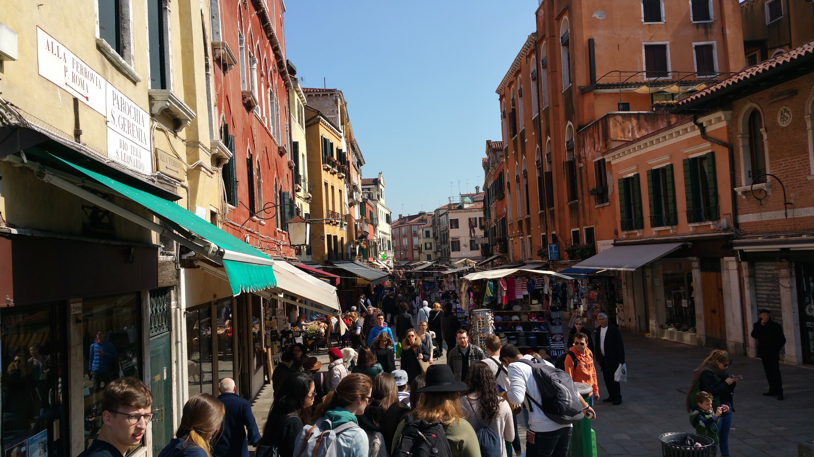
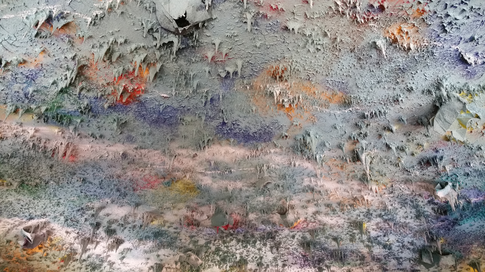
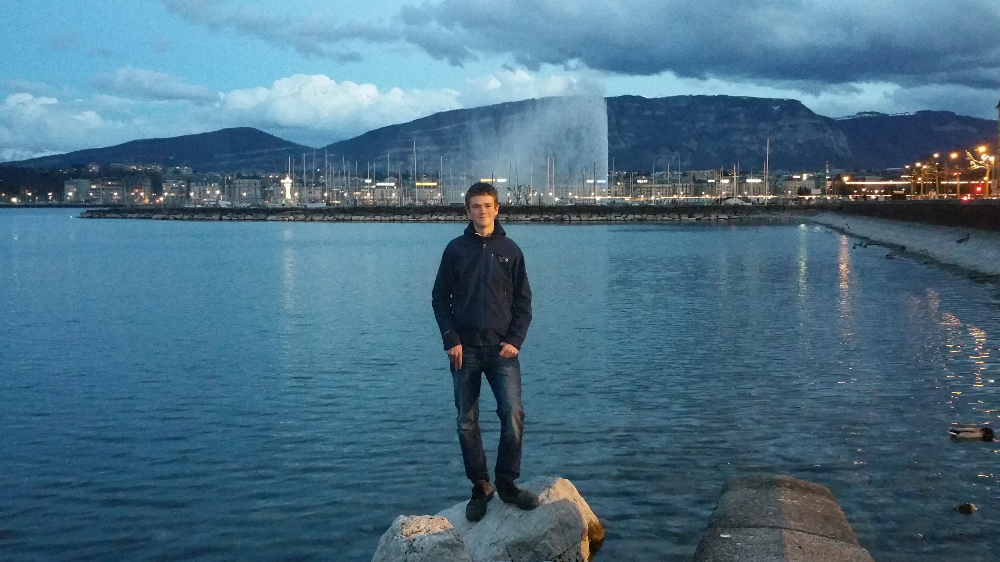
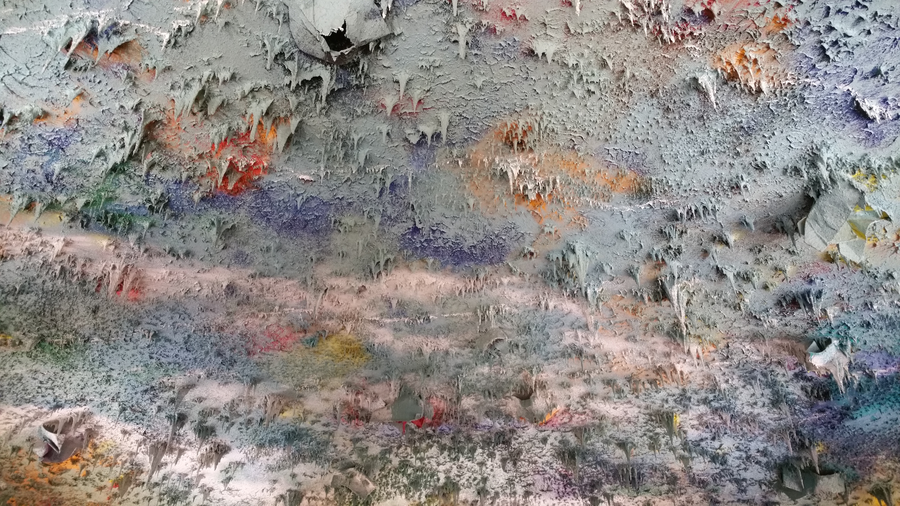
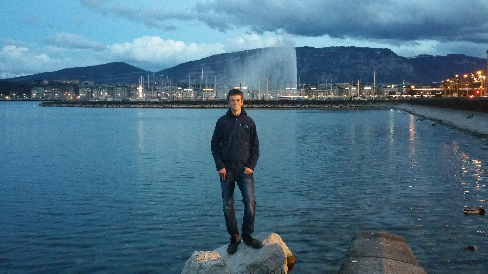
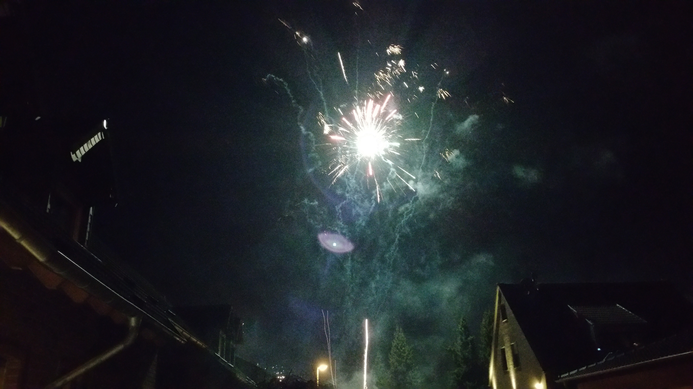
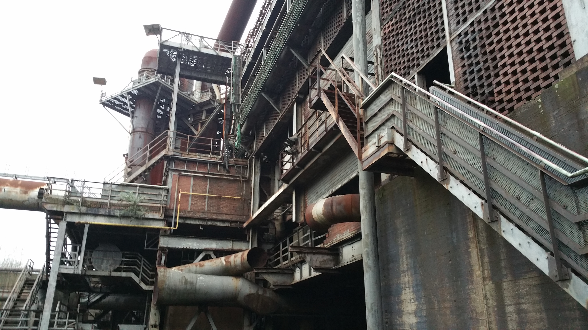

Personal Essays
This page contains a series of personal essays, with the newest being first and the oldest being last. It would be best to read these in chronological order (check the archive to get to older ones easily). These personal essays are similar to some sort of blog post, and I will continue to update them as time permits. Also, note that I am aware my writing isn't great and constructive criticism is welcome. Tell me what you think in the comments below!
Off to Sardinia
 Jasper Holton | July 16, 2016
Jasper Holton | July 16, 2016
With less than two weeks of my exchange to go, things are starting to wind down. Today I leave for Sardinia, Italy where I will meet my first host family and stay with them until the 23rd of July. After my week there, I will return to Germany but only for four days. Then I am coming back to Alaska!
It has been rainy but warm here in Germany, and I am excited to experience some nice warm island weather. I have never been to Sardinia, but from what I have been told (and the many beautiful pictures) it is supposed to be quite the paradise.
In the last month it has been one goodbye after another, as the many inbounds who I have became such great friends with leave. I finished up my school here, and have been preparing for my language test coming up the day before I leave. Hopefully I do well, and have a certificate to prove my success in learning German! So far I am very satisfied with my progress, and I think I have learned the language quite well. I want to continue learning German in school, so I don't loose what I have already learned and also to iron out some of the gramattical difficulties I always seem to have. German isn't easy!
I even got a certificate that says I survived my exchange!
My host sister, Jule, came back home yesterday. For me it was a wake up call, and made me feel like I am really leaving. She had a wonderful exchange year, but is also very happy to be back with her family. It makes me excited to see my family when I get back! But first, I have some more time to enjoy in Europe.
Well, I am off to Sardinia. Until next time, thanks for reading!
Five More Weeks
Jasper Holton | June 15, 2016
Willow and I had a great time together, but now she is off continuing her adventures. However, before Willow left, we did one more trip together. We took a train to Berlin for the weekend, so I could revisit this wonderful city and Willow could experience it for herself. We didn't have a whole lot of time there, but it was still enough time to tour the city on bikes, go to museums, visit the Zoo, and see the many famous sights in the city.
Now that Willow is gone, I have been settling back into my normal exchange life. It's a bit sad though, because many other exchange students are leaving soon, or have already left. I am staying longer than most other students here, which means I say goodbye to them as they leave, not as I leave.

About a week ago I had my birthday here in Germany. It was strange to be away from my family, but I didn't mind. My host family made me a nice dinner and a cake, which I really appreciated. They made me feel at home and happy. Otherwise the day wasn't very special though, which I thought was nice. Turning 17 isn't a big deal anyway.
Last weekend was our last Rotary weekend. It was called the "Adventure Weekend" and we stayed at a hostel consisting of various tents in Geldern. It was really cool to be surrounded by forest, and there was also a large swimming pool and park nearby. I really enjoyed seeing our exchange student group, but it's sad because a few students have already left, and many more will follow soon. I am going to miss everyone I have met here very much, and I hope I get a chance to say goodbye to them all.
On a similar note, it's just one more month until I fly to Sardinia with my first host family. I'm really looking forward to this trip, Sardinia is a beautiful place and it's very warm. Given the weather currently here in Germany, this will be a welcome change. After my trip to Sardinia I only have two more full days in Germany. That means I really only have a month left in Germany. Time flies!
Right now I am excited to leave, because I miss all of my friends and am curious how my home town has been while I have been gone. I am also really looking forward to moving to Hawaii. But I also know that I will miss my exchange very much, and I will have some pretty serious reverse culture shock when I get home. But that's just another experience that I get as an exchange student, and I look forward to experiencing it as I have everything else.
Willow's Visit and Amsterdam
Jasper Holton | May 20, 2016
Note from 13/6/2016: I wrote this entry a while ago but I forgot to post it! Here it is now for your enjoyment
A lot has happend in the past 10 days! On the 10th of May, my sister Willow arrived in Frankfurt to begin her summer Europe travels. And her first stop was visiting me here in Wesel. It was great to see her again after being away for eight months, it felt like a really long time.
(Above) Willow on a bike
After two days of having my sister here, we took a train to Amsterdam to meet Jack and Kris, two friends of ours from Alaska. We had an amazing time there, Amsterdam is a beautiful city with lots to see and do. We rented bikes and explored the city, went to museums, and experienced the famous Red Light District. All in all it was a gret time.
I haven't been keeping my blog very well updated, but I will try to write some more as my exchange comes to an end. At the time of writing this I have less than two months left, which feels very strange. It feels like I just got here, and at the same time it feels like I have been here for years.
We are now back in Wesel, where my sister is planning on staying for another week or so. We will travel around the area near Wesel, go to school together, and hang out with friends so Willow can experience some of what I do as an exchange student. It's good to have her here, and I am looking forward to the next week.
Europe Tour
Jasper Holton | April 2, 2016
Yesterday I got back from an amazing experience and what has been the best part of my exchange so far, the Europe Tour. On this tour I saw over a dozen beautiful cities and spent time with a group of nearly 60 people who I am glad to call my friends. I wasn't able to write for my blog daily as I did for the Germany tour, so this entry is going to be a bit long. For ease of orginization, I have divided the following part of this entry into sections about each city.
NOTE: This entry is currently a work in progress. Right now I just have photos from each city, but soon I will follow up with a short description of each city and descriptions of the photos. I will also be adding more photos as they become available to me.
Prague - 11th to 13thAfter getting on the bus in Münster/Duisburg, we began our tour with an overnight drive to Prague. This proved quit exhausting, as it was difficult to sleep in the uncomfortable bus seats. After arriving in Prague, we first headed to the hostel and left our bags there. Then we began a city tour, and saw some of the beautiful sights in the city. We were also given free time in the evening. type type type
 Budapest - 13th to 15th
Budapest - 13th to 15th

 Vienna - 15th to 17th
Vienna - 15th to 17th

 Padua - 17th to 19th
Padua - 17th to 19th
 Venice - 18th

Venice - 18th

 Rome - 19th to 22nd
Rome - 19th to 22nd
 Florence - 22nd to 24th
Pisa - 24th
Florence - 22nd to 24th
Pisa - 24th
 Nice - 24th to 26th
Nice - 24th to 26th
 Monaco - 25th
Monaco - 25th

 Avignion - 26th to 28th
Geneva - 28th to 29th


Paris - 29th to 31st
Avignion - 26th to 28th
Geneva - 28th to 29th


Paris - 29th to 31st

After our day in Paris, we drove back overnight to Duisburg where we parted ways. I drove back with my second host family and ate breakfast with them and my host mother before heading home to sleep. The tour was incredible, but it was also exhausting, with many nights where I got little sleep and many days with hours of walking.
ConclusionIt's hard to find the words to describe this tour, because looking back on the experience it feels immense and overwhelming. We saw so many incredible sights, had many fun and crazy experiences, and developed close friendships. I know that I will treasure every memory and never forget my Europe tour. And I hope that in reading this blog entry and looking at the photos, you have some idea of what it was like to partake in this incredible experience. Thanks for reading, and I hope you enjoyed!
Six Months in Germany
Jasper Holton | February 11, 2016
As of today I have been in Germany for six whole months. It's strange to think that my exchange is almost halfway over, but I still have a lot more time here and some great ways to spend it. I am registered and ready for the Europe tour, which will begin on the 10th of March and last three weeks. It's less than a month away, and I am really looking forward to it. I will be with our exchange program group, heading to various cities around Europe. Our route consists of:
- Prague
- Budapest
- Vienna
- Padua
- Venice
- Rome
- Florence
- Pisa
- Nice
- Monaco
- Avignion
- Genf
- Paris
We will also stop in various other cities along the way, but these are the major ones that we will be seeing. It should be lots of fun, I have heard from past exchange students that it was the highlight of their exchange.
I had the opportunity a few weeks ago to visit several water castles near Wesel, which was nice. Water castles are very common in this region of Germany, and they tend to be quite well restored. The photos are a bit dark due to the weather, but still give you a good idea of what they look like. It's really interesting to be in a place where a lot of the buildings are quite old.
I also had the opportunity to experience the German holiday of Karneval. Our rotary district had a meeting for the weekend of Karneval, starting on Saturday the 6th of February. Every exchange student in the district met in Dusseldorf, including the new arrivals. About half of the exchange students in this district left sometime in January, being as they had come in December/January last year. That means that even though some of the exchange students have finished their exchange, many of them are just starting. At the weekend all of the new arrivals were there, meaning many new faces from all over the world. We got to know eachother and celebrated Karneval by dressing up in costumes and and walking around the city. Sadly we weren't able to get out as much as we would have liked, but it was still a very enjoyable weekend. Here are some pictures of the celebrations.
(Above) Yes, I am dressed as a garden gnome
Other than that, not much has been going on here in Germany. I've been continuing to improve my language skills, doing schoolwork, and meeting with friends. It's quite relaxing actually, and I feel really at home here.
(Above) Hanging out with two of my favourite exchange students
New Years and Berlin
Jasper Holton | January 8, 2016
As it's now a few days into the new year, I feel its a good time to continue with my blog. Even though not very much time has passed, quite a lot has happened. I spent New Years Eve with a few friends from my school, which was quite enjoyable. We ate together, played some games, and set of fireworks to celebrate the new year. There were certainly quite a lot of fireworks, and the sky was filled with colour and smoke for almost an hour into 2016. I really enjoyed the fireworks, and managed to even get a few pictures.
The first few days of the new year I was able to relax and enjoy some time off with my host family. But on January 3, we drove together to Berlin. My host family has a small apartment in Berlin, as my host father works there and needs to stay there for most of the week. I stayed in Berlin until the 6th, when we had to drive back so I could go back to school.
The drive to Berlin was long and mostly uneventful, though I did get to see quite a bit of snow, which I found to be really nice. We got to Berlin in the evening, and ate dinner with some friends of my host family.
The second day I got a tour of Potsdam, a district from Berlin, with my host mother. The weather was quite cold, a bit colder than I had prepared for. But I still very much enjoyed walking around and looking at the beautiful castles.
The second day we spent in the city of Berlin. I got to see various sights that I had missed on the Germany tour, my favourite of which being the Berlin Wall Panorama. This was a large room with a panorama picture of the wall, from West to East Berlin. The panorama also featured a day/night cycle and various clips of speeches, such as Kennedy's "Ich bin ein Berliner" (translates to "I am a Berliner", showing solidarity with those living in the difficult situation in Berlin at the time). That evening we also went to see the film "Bridge of Spies", which is about the exchange of spies between American occupied West Berlin, and the Deutsche Democratic Republik (East Berlin). This fit really well with what I had seen that day, and I really felt like I got a good impression of what life was like in Berlin before the wall fell. It also happens that both of my host parents lived in West Berlin before the fall of the wall, and were there when it fell. I got to hear first hand what it was like, which I found to be very interesting.
One of the cool attractions we visited was the Fasssbender&Rausch Chocolatier. Here are a few pictures:
After my eventful trip to Berlin, I am now back in Wesel and going to school. The new year has been good so far!
A Day in Dusseldorf and Oberhausen
Jasper Holton | December 30, 2015
I had the opportunity yesterday to spend a day in Dusseldorf and Oberhausen (a few nearby cities) with my host brother Laurenz, his friend Christian, and Christian's friend Victor, visiting from South Korea. We started late morning and drove to Dusseldorf in Christians car, before walking around the city and seeing it's various sites, including the old city and harbor.
We also spent some time in the Rheinturm, a 234 meter and 22,500 ton telecommunications tower located near the harbor. We got to see some nice views of the city, despite a bit of fog.

After completing our tour of Dusseldorf, we went to the industrial park in Duisburg. At the heart of the park is an old steel factory that has been outfitted with various walking pathways and information panels and can be explored freely. It was fun to climb around on the structuress and learn a bit about the production of steel. We also got to watch a pretty sunset over Duisburg from the top of the factory.
Being as Victor didn't speak any German, we spoke English together for the entire day. This was a bit strange for me, because I barley speak any English normally. I speak entirley in German with my host family and friends, and mostly only speak English with friends back home. Nonetheless, we had a good time in Dusseldorf.